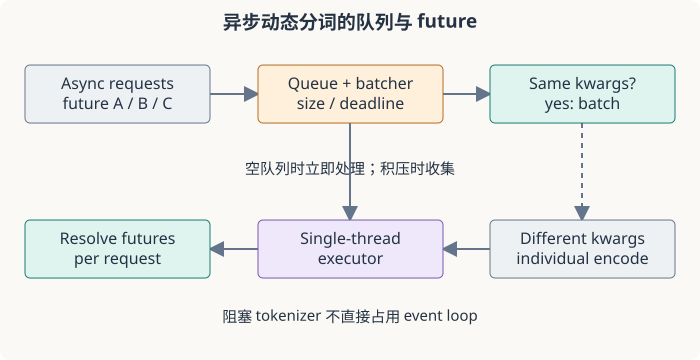
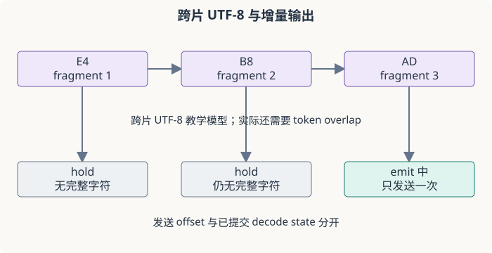

第 48 章 · SGLang 服务生命周期
Tokenizer Manager & Detokenizer：异步分词、增量解码与流式响应
如何避免 CPU tokenization 堵塞事件循环，并保证流式文本不乱码、不重复？
如何避免 CPU tokenization 堵塞事件循环，并保证流式文本不乱码、不重复？ 从具体反例出发，连接算法、工程接口和验收边界。
1. 请求接入是 CPU 工作流
HTTP/API 解析、chat template、multimodal preprocessing、tokenization、sampling 参数校验都在真正 GPU forward 前。TokenizerManager 把文本/已有 token IDs 变成 scheduler 可消费的请求并按 request ID 跟踪输出；DetokenizerManager 接收 token batches 并还原文本。不能把网络 SSE chunk、一次 sampler step 和 tokenizer token 当成相同单位。
2. 动态 batching 的机会与边界
AsyncDynamicbatchTokenizer 针对单字符串请求懒初始化 asyncio queue 和 batcher task，每请求配 future，阻塞 tokenizer 在单线程 executor 执行。固定源码默认 max_batch_size=32、batch_wait_timeout_s=0.002；队列无其他请求则立即处理，不强制等待2ms。已有积压时再收集到上限或超时；只有 kwargs 一致才能批量 tokenize，否则逐条执行。显式多字符串 batch 与此不同。

3. 开销模型与调度权衡
假设一次 tokenizer 调用固定开销 a、每条等长输入成本 b，N 个逐条调用需 N(a+b)，一次 batch 理想 a+Nb。a=2ms、b=1ms、N=4 时12ms vs6ms，但排队与 executor 竞争可能让单请求 TTFT 变坏。真实 tokenizer 长度、并行性和 CPU core 数不是常数。
4. 增量 detokenization 不是逐 token decode
BPE/token byte fragments 可能组成一个 UTF-8 code point，也可能受前文空格/normalization 影响。DetokenizeState 保留 surr_offset、read_offset 与 decode_ids，构造重叠 read_ids 和 surr_ids，取 decoded difference，避免逐 token 字符串直接拼接。未完成的 UTF-8 可能出现 replacement char；源码暂不 commit token offsets，只发 printable prefix 并在后续重试。

5. 为什么 sent_offset 与 decoded_text_len 分开
某次重试已向客户端发送可打印 prefix，但内部尚未 commit 全段；sent_offset≥decoded_text_len 的 gap 记录 pending 文本。下一轮清晰解码时扣掉已发 prefix，不重复输出。finished path 物化最终文本并 trim matched stop；no_stop_trim 改变语义。连续性检查非 beam 的 received+new 与 completion_tokens；CI 中 mismatch 抛错，生产路径 warning 后 resync，不能声称总会拒绝。
6. 请求取消、流式结束与背压
request ID 绑定 future/输出状态，abort-before-dispatch 需防止已经取消的请求进入 scheduler。客户端断开、超时和正常结束都需释放 request state 与 KV（不同进程负责不同资源）。流式 API 层还需处理增量 metadata、finish reason、停止字符串和输出序列化；socket 写入背压不应被当成模型 decode 耗时。
7. 复现与测试矩阵
标准库 incremental UTF-8 decoder 可验证跨 byte chunk 的字符保留；它不是 SGLang tokenizer 复刻。测试中文、emoji、特殊 token、stop 跨片、不同 kwargs、并发取消、重复/缺失 output IDs 和断开。比较 end-to-end TTFT、tokenizer queue time、CPU utilization、SSE 延迟及 output consistency，逐层定位。
8. 交互：选择机制状态与反例
Tokenizer & Streaming 教学实验
第一个 byte fragment：UTF-8 E4：字符未完成，不输出。
第二个 fragment：B8：仍未完成，不输出。
最后 fragment：AD：三个 bytes 组成“中”，只输出一次；下一空片不重复。
教学模型仅验证机制与反例，不代表真实 GPU 或集群 benchmark。
9. CPU 最小实验
下载 streaming_detokenize.py，使用标准库运行。源文件包含确定性输出及正反例断言。
python3 examples/streaming_detokenize.py实验是教学抽象，不执行实际模型、网络传输、GPU kernels 或 Kubernetes 部署。
10. 源码阅读路线与证据
固定上游快照 b323e8e6e3aacfe606b11a2ef51ae73bc8b283a7，区分当前实现、工程建议和教学推导。
- TokenizerManager.generate_request：Request generation is an async lifecycle entry point.
- AsyncDynamicbatchTokenizer：Dynamic queue batches single-string requests; identical kwargs allow one batch call in a single-thread executor.
- send and abort-before-dispatch checks：Dispatch paths check whether the request has been aborted.
- DetokenizerManager batch token output：Batch token IDs are converted using per-request detokenization states.
- DetokenizeState：State tracks token offsets, received counts, sent text and incomplete decoding; final output is trimmed.